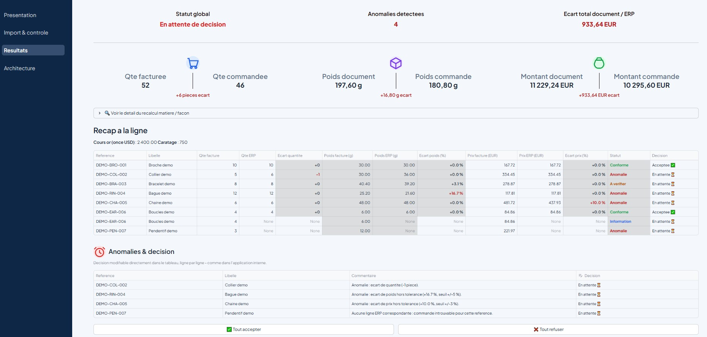

Sources dispersées
PDF, Excel, commandes, factures et bons de réception.

Application métier · Data & automatisation
Une application qui automatise le rapprochement entre les documents fournisseurs et les données de l’ERP Odeis.
Un contrôle essentiel, mais ralenti par la multiplicité des documents et des règles fournisseur.
PDF, Excel, commandes, factures et bons de réception.
Or, poids, façon, pertes et frais annexes.
Ressaisies manuelles, écarts difficiles à détecter et suivi fragmenté.

Une application web qui automatise le contrôle des factures, proformas et bons de réception. Elle extrait les données, les rapproche avec l’ERP Odeis et applique les règles métier propres à chaque fournisseur.
Lecture du document fournisseur.
Recherche des données dans Odeis.
Calcul des écarts et application des tolérances.
Validation, refus et archivage.
PDF, XLS et XLSX
Commandes et réceptions
Quantités, poids, prix et or
Tolérances et décisions
Historique et archivage
Suivi et exports Excel

Un processus auparavant manuel et dispersé devient guidé, automatisé et traçable.
Python · Streamlit · Pandas · NumPy · PDFPlumber · OpenPyXL · PyArrow · Pytest · API REST
Évolution : migration progressive vers Django et centralisation future des historiques dans PostgreSQL.